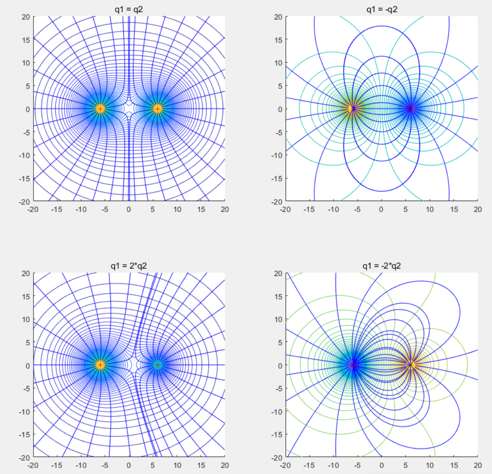

电荷
- 导体有自由电子，感应起电
- 绝缘体没有自由电子，也能通过极化现象带电
起电方式： - 摩擦起电 - 感言起电 - 接触起电，两小球接触，各自电荷比=半径比，q1:q2 = r1: r2
电荷守恒定律
与外界没有电荷交换的系统，电荷的代数和保持不变
电量单位：库伦(C) \(1C=1AS\) (1库伦表示1安培秒)
最小单位电荷电量: \(e = 1.6 * 10^{-19} C\) 一个质子或一个电子所带电量，最初由密里根油滴实验测得。
核质比 = \(\frac{q}{m}\) 粒子电荷: 例子质量
库伦定律
在真空中，两个静止点电荷之间的相互作用力（静电力）与它们的电荷量的乘积成正比，与它们之间的距离的平方成反比。
点电荷：只有电量，没有体积，r<<d
库伦定律的数学表达式为： $\(F = k \frac{q_1 q_2}{r^2}\)$
其中： - F 是作用在两个电荷上的力（单位：牛顿 N）\ - k 是库伦常数，约为 \(9.0 \times 10^9 N·m^2/C^2\) \ - q1 和 q2 是两个点电荷的电量（单位：库仑 C）\ - r 是两个电荷之间的距离（单位：米 m）
质子与电子之间的库仑力远大于万有引力之：\(F_库/F_万\approx 2*10^{37}\) \ 因此在微观层面，是可以不考虑粒子间的万有引力的。
均匀带电的球体或球壳，可以看成是在球心处的点电荷，均匀带电说明不是导体
介质中库伦定律的数学表达式为： \(F = \frac{k}{\epsilon _r} \frac{q_1 q_2}{r\^2}\)
\(\epsilon _r\) - 相对介电常数
电场
库仑力的作用方式是电场
电场的大小可以用电场强度（E）来描述，其定义式为： $\(E = \frac{F}{q}\)$ 其中E代表电场强度，F是电荷在电场中所受的力，q是置于电场中的检验电荷的电量。 电场的大小与试探电荷无关。
电场方向是描述正电荷在电场中受力方向的矢量，正场源电荷产生发散电场，负场源电荷产生吸收电场。
点电荷的场强公式： $\(E = k\frac{Q}{r^2}\)$
均匀带电球壳 - 球壳外部场强(r>R): \(E = k\frac{Q}{r^2}\) - 球壳内部(r<R): \(E = 0\) - 球壳上(r=R): \(E = \frac{1}{2}k\frac{Q}{r^2}\) (可能要用到高等数学在证明)
均匀带电球体 - 球壳外部场强(r>R): \(E = k\frac{Q}{r^2}\) - 球壳内部(r<R): \(E = k\frac{Q_内}{r^2}=k\frac{Q}{R^3}r\)
电场线
电场线是用来形象地描述电场的分布情况的一种曲线 - 电场线的方向表示电场的方向，且在每一点的切线方向与该点的电场强度方向一致 - 电场线从正电荷或无限远出发，终止于负电荷或无限远，是不闭合的曲线（静电场） - 电场线的疏密程度表示电场的强弱，离点电荷越近，电场线越密，场强越大 - 电场线不会相交，因为在电场中任意一点的电场强度不可能有两个方向
用电场线的疏密描述电场强度，得： $$ E=k\frac{Q}{r^2}=\frac{N}{4\pi r^2} $$ $$ N=4\pi kQ - N用于约定电场线的数量$$
双点电荷的电场线举例：

静电平衡
导体进入静电场 - 电荷移动，形成感应电场 - 感应电场与外电场反向 - 内外场抵消，静电平衡
静电平衡时： - 电荷不在定向移动 - 导体内部场强处处为零 - 表面电场线与表面处处垂直 - 导体上的电荷分布在导体外部，内部无净电荷 - 尖锐处电荷密集，平坦凹陷处电荷稀疏
静电屏蔽 - 导体壳可以屏蔽外电场 - 不接地导体壳不能屏蔽内电场 - 接地导体壳可以屏蔽内电场
电势能
- 静电力做功与路径无关（保守力）
- 电荷在电场中具有电势能
- 电场力做功等于电势能减少
电势
电场中某个点的电势：试探电荷的电势能与电量的比值 \(\phi = \frac{E_p}{q}\) - \(\phi\), \(E_q\), \(q\) 都是标量， 有正负 - 电势的单位是伏特 - 正电荷在高势能处势能大 - 负电荷在低势能处势能大 - 顺电场线，电势下降；逆电场线，电势上升；垂直电场线，电势不变 - 电场线方向，地势下降最快 - 点电荷的电势公式\(\phi=k\frac{Q}{r}\) - 电场是矢量，电势是标量